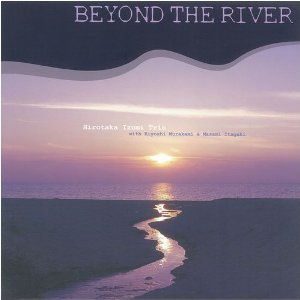

Beyond The River
和泉宏隆トリオ和泉宏隆 (p) / 村上聖 (b) / 板垣正美 (ds)
About the Album
作品紹介
Beyond The River /和泉宏隆トリオ
2007年のトリオ･デビュー作『Lights In A Distance』を踏襲、さらに磨きのかかったピアノ･トリオ･サウンドがここに完成。トリオとして更なる高い次元へと上ってゆく上でのターニングポイントを予感させる作品。
和泉宏隆（ｐ）
村上聖（ｂ）
板垣正美（ｄｓ）
￥2,940(税込み）
お買い上げはこちら>>>和泉宏隆 HP
amazon
1. Heart Land
2. Northern Island Breeze
3. GladioluS
4. Moon Palace
5. Eyes Of Flora
6. Prelude
7. Snow Flower
8. Spiral Fusion
9. Golden Land
10. Time Remembered